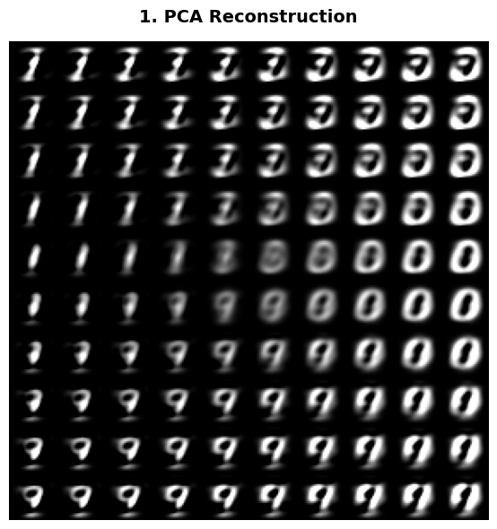
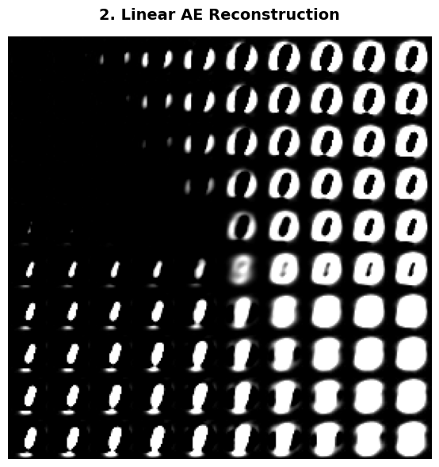
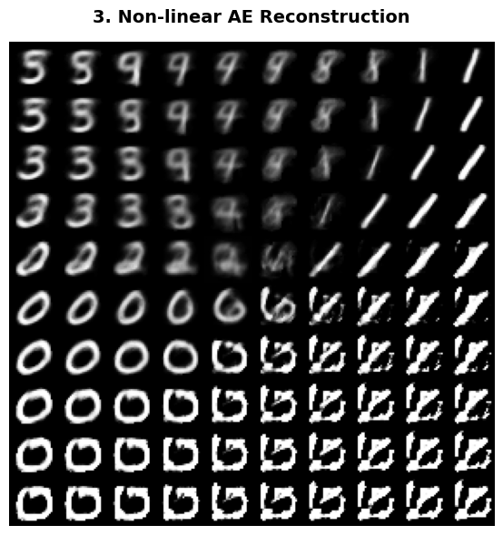

A1. 신경망의 연속성과 확률 밀도의 누수(Leakage) 때문입니다.
A2. 조각 선형 다양체(Piecewise Linear Manifold)의 형성 및 경사하강법(SGD)의 내재적 편향 덕분입니다.
A3. 아닙니다. GAN은 완전히 반대되는 방향성(Reverse KL / JSD)을 가집니다.
A4. 네, 주성분 분석(PCA)과 수학적으로 동일한 '평평한 선형 다양체'를 배웁니다.
| 특성 | PCA (주성분 분석) | 선형 오토인코더 (Linear AE) |
|---|---|---|
| 기저의 직교성 | 주성분 벡터들이 서로 직교함 (\(W^T W = I\)) | 기저 벡터들이 직교할 필요가 없음 (Non-orthogonal) |
| 축의 순서 | 고유값 크기 순으로 고유한 순서가 정해짐 | 공간 내에서 기저들이 회전되어 있어 순서가 없음 |
| 수학적 해 | SVD를 통한 유일한(Unique) 해 | 경사하강법으로 도달하며, 무수히 많은 동치 해 존재 |
세 모델이 데이터 공간을 어떻게 다르게 해석하는지 확인하기 위해, 2차원 잠재 공간의 \([-10, 10]\) 구간을 \(10 imes 10\) 격자로 샘플링하여 하나의 \(280 imes 280\) 행렬 이미지로 복원·비교하는 파이토치 핵심 코드입니다.
import numpy as np
import torch
import torch.nn as nn
import torch.optim as optim
from torchvision import datasets, transforms
from torch.utils.data import DataLoader
from sklearn.decomposition import PCA
import matplotlib.pyplot as plt
# 1. 데이터 로드 및 784차원 평탄화
transform = transforms.Compose([transforms.ToTensor(), transforms.Lambda(lambda x: x.view(-1))])
train_dataset = datasets.MNIST(root='./data', train=True, download=True, transform=transform)
X_train_tensor, _ = next(iter(DataLoader(train_dataset, batch_size=len(train_dataset))))
X_train = X_train_tensor.numpy()
# 2. 잠재 공간 격자 생성 (-10 ~ 10)
grid_x, grid_y = np.linspace(-10, 10, 10), np.linspace(-10, 10, 10)
grid_latent = np.array([[x, y] for y in grid_y[::-1] for x in grid_x], dtype=np.float32)
# 3. 모델 1: PCA 복원
pca = PCA(n_components=2).fit(X_train)
images_pca = pca.inverse_transform(grid_latent)
# 4. 오토인코더 구조 정의 및 학습 함수
class Autoencoder(nn.Module):
def __init__(self, use_nonlinear=False):
super().__init__()
if use_nonlinear:
self.encoder = nn.Sequential(nn.Linear(784, 128), nn.ReLU(), nn.Linear(128, 2))
self.decoder = nn.Sequential(nn.Linear(2, 128), nn.ReLU(), nn.Linear(128, 784), nn.Sigmoid())
else:
self.encoder = nn.Linear(784, 2, bias=False)
self.decoder = nn.Linear(2, 784, bias=False)
def forward(self, x): return self.decoder(self.encoder(x))
def train_ae(model, data):
loader = DataLoader(data, batch_size=256, shuffle=True)
optimizer = optim.Adam(model.parameters(), lr=0.002)
for epoch in range(15):
for batch in loader:
optimizer.zero_grad()
loss = nn.MSELoss()(model(batch), batch)
loss.backward(); optimizer.step()
return model
# 5. 선형 및 비선형 AE 학습 및 복원
linear_ae = train_ae(Autoencoder(False), X_train_tensor)
nonlinear_ae = train_ae(Autoencoder(True), X_train_tensor)
with torch.no_grad():
grid_tensor = torch.tensor(grid_latent)
images_linear = linear_ae.decoder(grid_tensor).numpy()
images_nonlinear = nonlinear_ae.decoder(grid_tensor).numpy()
# 6. 280x280 단일 행렬로 시각화하는 함수
def plot_large_matrix(images, title):
grid_reshaped = images.reshape(10, 10, 28, 28)
grid_transposed = grid_reshaped.transpose(0, 2, 1, 3)
large_matrix = np.clip(grid_transposed.reshape(280, 280), 0, 1)
plt.figure(figsize=(5, 5))
plt.imshow(large_matrix, cmap='gray')
plt.title(title, fontsize=12, fontweight='bold', pad=10)
plt.axis('off'); plt.tight_layout(); plt.show()
plot_large_matrix(images_pca, "1. PCA Subspace")
plot_large_matrix(images_linear, "2. Linear AE Subspace")
plot_large_matrix(images_nonlinear, "3. Non-linear AE Manifold")

